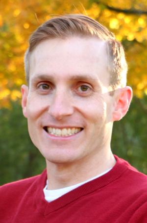

About Me
The views on this site are my own and are not the views of my employer.
On the subject of me
Hopefully you are here reading this because you are also passionate about supercharging engineering using simple open source tools and open collaboration. You will find articles on Python, SysML, and my thoughts on technology.

I'm currently Functional Safety Supervisor for Ford Motor Company, which means I help design how complex automated and electrified technologies work together to be a safe systems. I live near Detroit, MI, and I love its underdog spirit. I am originally from California. Prior to this, I served as a submarine officer in the U.S. Navy.
I am married and a father of two young kids who keep me on my toes and keep me smiling. I commute by bicycle to work and enjoy brewing beer.
Please follow or connect with me: